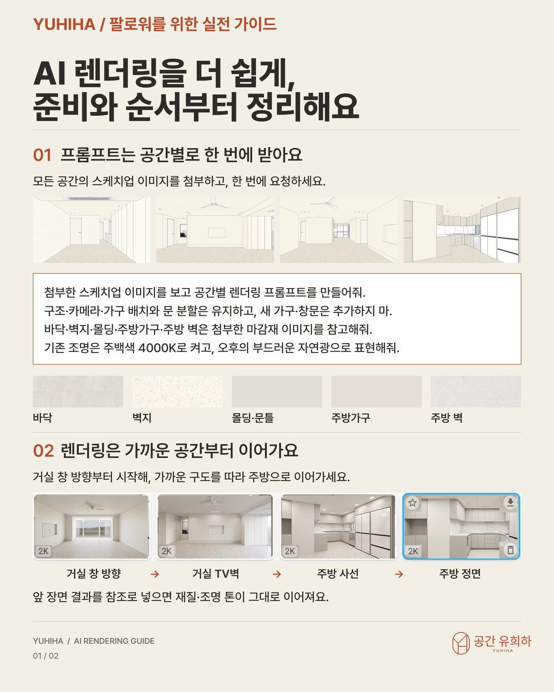
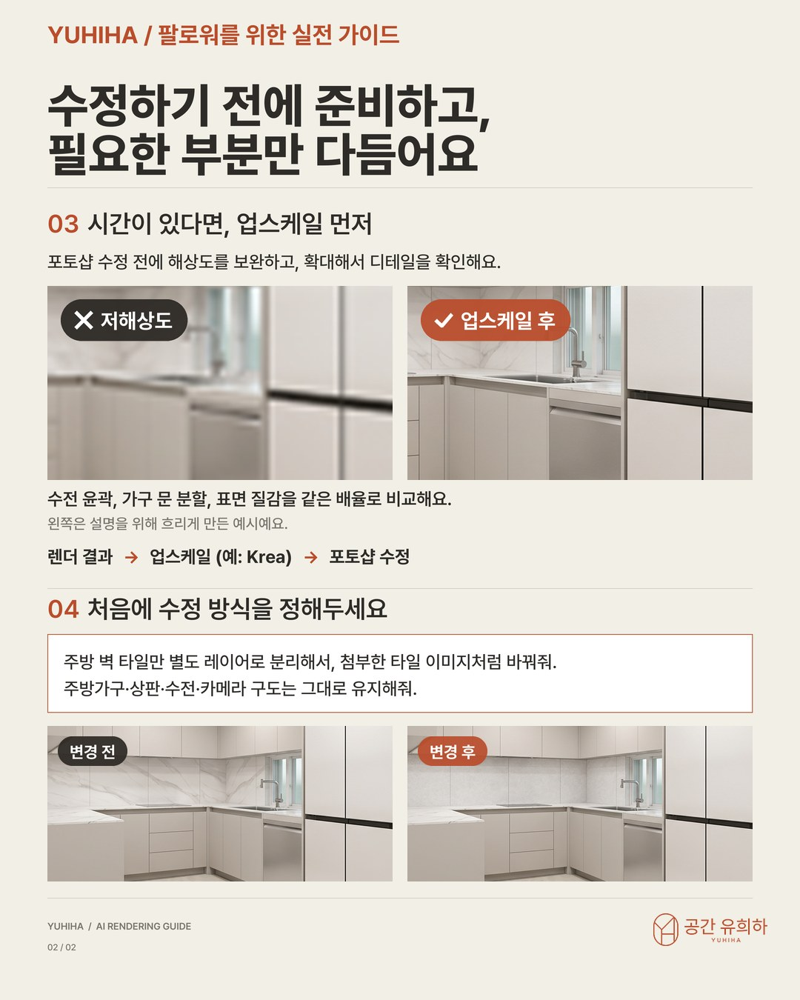
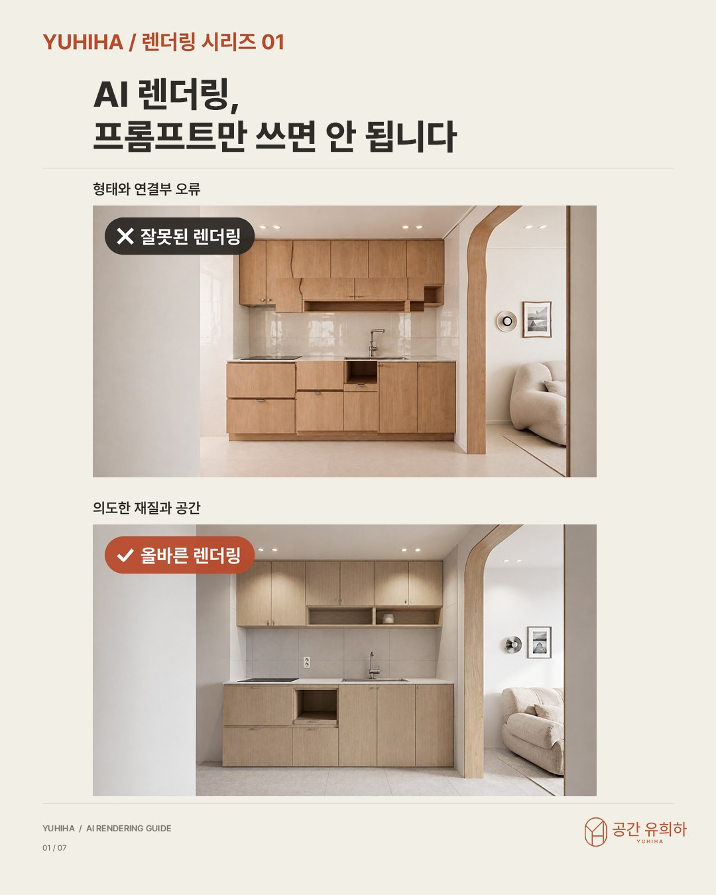
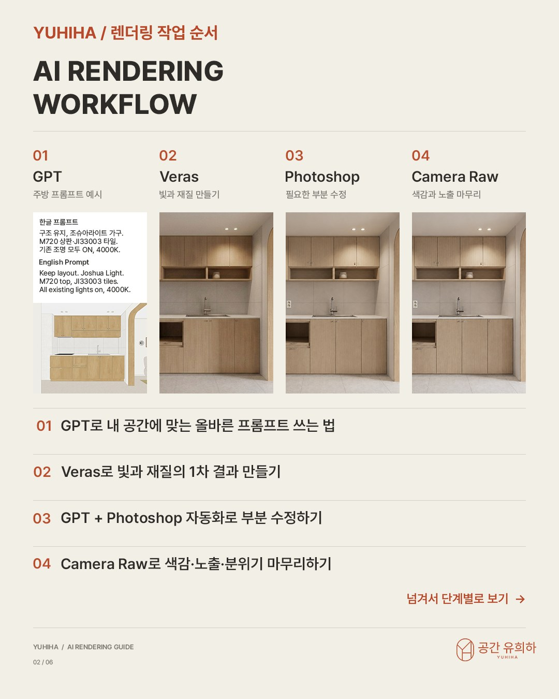
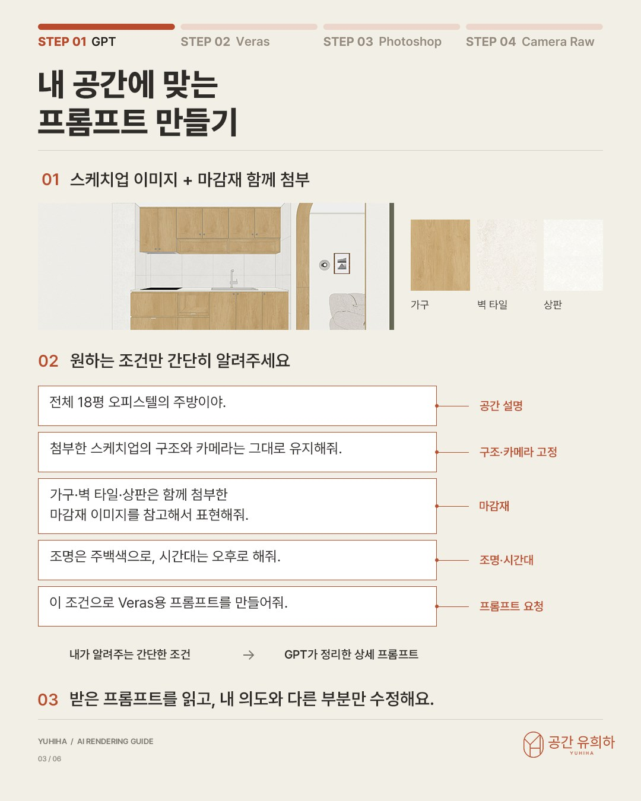
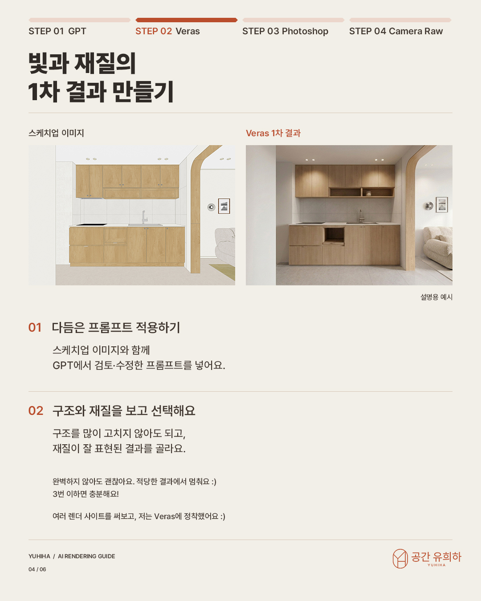
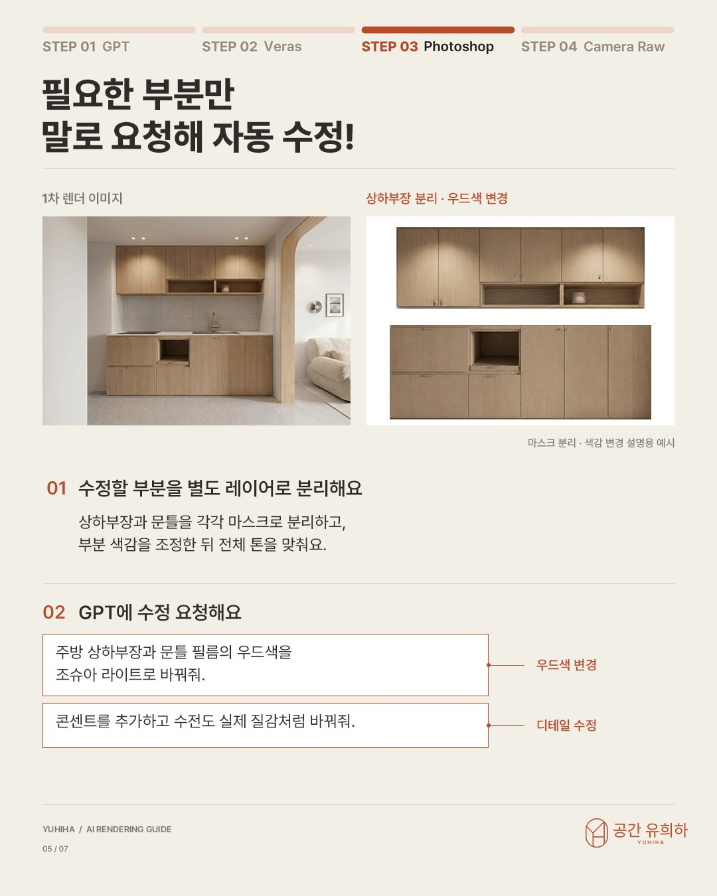
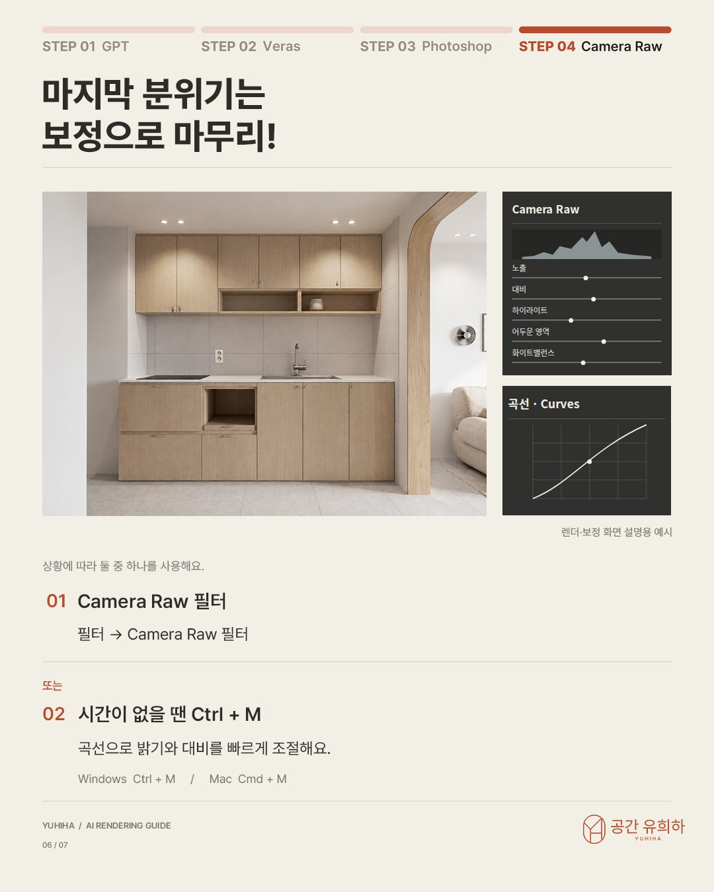

AI 렌더링 가이드
팔로워분들께만 드리는 실전 가이드 2장과 복사해서 바로 쓰는 프롬프트, 게시물 6장을 모았어요.
PDF로 한 번에 받기8쪽 · 1.5MB · 주방 사례 6장 + 실전 가이드 2장안드로이드: 버튼을 누르면 바로 받아져요. 내 파일(파일) 앱 → 다운로드 폴더에 저장돼요.
아이폰: 버튼을 누르면 공유 화면이 떠요. '파일에 저장'을 누르면 파일 앱에 저장돼요.
00이용 조건
- 개인 공부와 실무 작업에 자유롭게 참고하실 수 있어요. 프롬프트도 마음껏 고쳐 쓰세요.
- 이미지·PDF를 다른 곳에 올리거나 재배포·판매할 수 없어요.
- 강의·교육 자료로 쓰시려면 먼저 @yuhiha_designers로 연락 주세요.
주변에 알려 주고 싶으시면 파일 대신 인스타 게시물을 공유해 주세요 🙏
01팔로워 전용 · 실전 가이드2장
사진을 길게 누르면 한 장씩 저장할 수 있어요.


02슬라이드 그대로 따라 하는 프롬프트작업 순서대로
카드마다 어느 장의 방법인지 → 사용법 → 프롬프트 순서예요. [ ] 대괄호 안만 내 현장에 맞게 바꿔서 ChatGPT에 붙여넣으세요. 스케치업 화면은 잘라 내지 말고 원본 크기 그대로 올려야 AI가 형태를 덜 틀려요.
게시물 3장STEP 01 · 한 공간 프롬프트 받기
원하는 조건만 간단히 알려 주면 GPT가 렌더링 툴에 넣을 상세 프롬프트로 정리해 줘요.
- 스케치업 캡처 1장 → 마감재 사진 순서로 첨부해요.
- 아래 프롬프트의 [ ]만 바꿔서 보내요.
- 답에 나온 한글 요약을 읽고, 의도와 다르면 다음 카드로 고쳐요.
너는 실내건축 시각화 전문가야. 첫 번째 이미지는 스케치업 화면이고, 그 뒤 사진은 마감재 참고 이미지야. 이미지는 만들지 말고, 렌더링 툴([Veras])에 그대로 붙여넣을 프롬프트를 글로만 써줘. 렌더링 툴은 내가 첨부한 사진을 볼 수 없으니, English prompt 안에서는 '첨부한 사진·두 번째 이미지'라고 쓰지 말고 색·질감·패턴을 말로 풀어 써줘. [공간 설명] 전체 [18평 오피스텔]의 [주방]이야. [구조·카메라 고정] 첨부한 스케치업의 구조와 카메라는 그대로 유지해줘. 벽·창·문 위치, 가구 배치와 문 분할도 바꾸지 마. [마감재] [가구 → 벽 타일 → 상판] 순서로 첨부한 마감재 이미지를 참고해서 표현해줘. [조명·시간대] 기존 조명은 [주백색 4000K]으로 켜고, 시간대는 [오후의 부드러운 자연광]으로 해줘. [금지] 스케치업에 없는 가구·소품·창문은 추가하지 마. [답 형식] ① English prompt (120단어 이내) ② Negative prompt (English) ③ 한글 요약 3줄 (내 의도와 맞는지 확인용) ④ 이미지만 보고 확실하지 않은 부분은 추측하지 말고 질문으로
실전 가이드 1장01 · 여러 공간 프롬프트 한 번에 받기
거실·주방처럼 장면이 여러 개면 공간마다 따로 받지 말고 한 번에 받아요. 같은 마감재가 모든 장면에서 같은 말로 들어가요.
- 모든 공간의 스케치업 캡처 → 위치별 마감재 사진 순서로 첨부해요.
- 마감재 사진 순서를 [ ]에 그대로 적어요.
너는 실내건축 시각화 전문가야. 첨부한 이미지 중 앞의 [4]장은 한 집의 여러 공간을 찍은 스케치업 화면이고, 그 뒤 사진은 위치별 마감재 참고 이미지야. 이미지는 만들지 말고, 스케치업 화면마다 렌더링 툴([Veras])에 그대로 붙여넣을 프롬프트를 글로만 써줘. 렌더링 툴은 내가 첨부한 사진을 볼 수 없으니, English prompt 안에서는 '첨부한 사진·두 번째 이미지'라고 쓰지 말고 색·질감·패턴을 말로 풀어 써줘. [현장] - 공간: [32평 아파트 거실·주방] - 마감재 사진(첨부 순서대로): [바닥 → 벽지 → 몰딩·문틀 → 주방가구 → 주방 벽] - 조명: 기존 조명 모두 켜기, 주백색 [4000K] - 시간대: [오후의 부드러운 자연광] [지킬 것] 1. 구조·카메라·가구 배치와 문 분할은 스케치업 그대로 유지 2. 새 가구·창문은 추가하지 않고, 벽이나 가구 면을 창·유리로 바꾸지 않기 3. 같은 마감재는 모든 공간에서 같은 색·질감·패턴 크기로 표현 [답 형식] 스케치업 화면마다: ① 공간 이름 (예: 거실 창 방향) ② English prompt (120단어 이내) ③ Negative prompt (English) ④ 한글 요약 3줄 확실하지 않은 부분은 마지막에 질문으로 따로 모아줘.
게시물 3장03 · 받은 프롬프트에서 다른 부분만 고치기
받은 프롬프트를 읽고, 내 의도와 다른 부분만 고쳐요. 나머지까지 다시 쓰게 두면 잘 된 부분이 바뀌어요.
방금 만든 프롬프트에서 아래 내용만 고쳐줘. 나머지 문장은 한 글자도 바꾸지 마. - [조명: 주백색 → 전구색 3000K] - [상판: 무광 → 은은한 반광] 고친 내용은 English prompt와 한글 요약 모두에 반영하고, 바뀐 문장 앞에 ✏️ 표시를 붙여줘.
게시물 4장STEP 02 · 1차 결과 고르기
렌더링은 3번 이하면 충분해요. 완벽한 결과 대신 구조를 많이 고치지 않아도 되고 재질이 잘 표현된 결과를 골라요.
- 렌더링 툴에 스케치업 장면을 띄우고 받은 English prompt를 넣어 [2~3]번 돌려요.
- 스케치업 캡처 → 결과 이미지 순서로 첨부하고 아래 프롬프트로 골라요.
첫 번째 이미지는 스케치업 원본이고, 그 뒤 [3]장은 같은 장면을 렌더링한 결과야. 이미지는 만들지 말고 글로만 비교해줘. 결과마다 아래를 표로 정리해줘. - 구조 오류: 스케치업과 비교해서 바뀐 벽·창·문 위치, 가구 형태와 연결부, 문 분할, 추가되거나 사라진 물건 - 재질 표현: 마감재 색·질감이 자연스러운지 - 포토샵으로 고치기 쉬운 정도: 쉬움 / 보통 / 어려움 마지막에 '구조를 가장 덜 고쳐도 되고 재질이 좋은' 결과 하나를 고르고, 그 결과에서 고칠 곳을 순서대로 적어줘.
실전 가이드 1장02 · 다음 장면으로 이어 가기
거실 창 방향 → 거실 TV벽 → 주방 사선 → 주방 정면처럼 가까운 구도를 따라가면 재질·조명 톤이 이어져요.
- 다음 장면 스케치업 캡처 → 앞에서 고른 결과 이미지 순서로 첨부해요.
- 참조 이미지를 넣을 수 있는 렌더링 툴이나 ChatGPT에 아래 프롬프트를 넣어요.
첫 번째 이미지는 이번에 렌더링할 스케치업 장면이고, 두 번째 이미지는 앞에서 만든 렌더링이야. 두 번째 이미지는 마감재와 조명의 참고로만 써줘. [유지] 첫 번째 이미지의 구조·카메라·가구 배치·문 분할을 그대로 두고, 벽이나 수납장을 창·유리로 바꾸지 마. [이어 가기] 바닥·벽·몰딩·주방가구 마감재의 색과 질감, 조명 색온도와 빛 방향은 두 번째 이미지와 똑같이 맞춰줘. [금지] 새 가구·소품·창문을 추가하지 마. 실제 인테리어 사진처럼 자연스러운 그림자와 반사로 표현해줘.
실전 가이드 2장03 · 업스케일 뒤 같은 배율로 확인하기
포토샵 수정 전에 해상도를 먼저 올려요(렌더 결과 → 업스케일(예: Krea) → 포토샵 수정). 업스케일은 선명해지는 대신 형태를 살짝 바꿀 때가 있어서, 같은 부분을 비교해 봐야 해요.
- 업스케일 전 → 업스케일 후 순서로 첨부해요.
첫 번째 이미지는 업스케일 전, 두 번째는 업스케일 후야. 이미지는 만들지 말고 글로만 비교해줘. 같은 부분을 같은 배율로 본다고 생각하고 아래를 확인해줘. 1. 수전 윤곽, 손잡이, 콘센트 모양이 바뀌거나 새로 생긴 곳 2. 가구 문 분할선·줄눈이 끊기거나 늘어나거나 휜 곳 3. 표면 질감(대리석 무늬·나뭇결·타일)이 지나치게 날카롭거나 반복돼 보이는 곳 문제가 있으면 '위치 – 무엇이 바뀌었나 – 업스케일 전 이미지로 되돌릴지, 포토샵에서 고칠지'로 적어줘.
게시물 5장 · 실전 가이드 2장STEP 03 · 필요한 부분만 말로 수정하기
처음에 바꿀 곳과 그대로 둘 곳을 정해서 요청해요. 수정할 부분은 별도 레이어(마스크)로 나눠야 나머지가 안 바뀌어요.
- 수정할 렌더링 이미지 → 바꿀 마감재 사진 순서로 첨부해요.
- 포토샵에서 하면 레이어로 나뉘어요. ChatGPT에서 하면 이미지를 통째로 다시 그리니, 결과를 확대해서 원본과 꼭 비교해요.
첫 번째 이미지(렌더링)에서 [주방 상하부장과 문틀 필름의 우드색]만 바꿔줘. [바꿀 것] 두 번째 이미지([조슈아 라이트] 샘플)처럼 색·결 방향·광택을 맞춰줘. [방법] 바꿀 부분만 마스크로 분리해서 색을 바꾸고, 마지막에 전체 톤을 맞춰줘. [그대로 둘 것] 상판·벽 타일·수전·조명·카메라 구도, 그리고 바꿀 부분 밖의 모든 것. [마무리] 원래 빛 방향·그림자·반사에 맞춰 경계가 티 나지 않게.
첨부한 렌더링에서 아래 디테일만 실제 시공 사진처럼 다듬어줘. 구도와 나머지는 바꾸지 마. - [콘센트: 상판 위 벽에 2구 콘센트 추가, 상판에서 200mm 위] - [수전: 스테인리스 헤어라인 질감, 주변이 자연스럽게 비치도록] - [문 사이 줄눈: 3mm로 또렷하게, 높이 일정하게] 부분마다 따로 작업하고, 원래 조명 방향에 맞춰 그림자를 넣어줘.
게시물 6장STEP 04 · 마지막 분위기 보정값 받기
포토샵 필터 → Camera Raw 필터에서 색감·노출을 맞춰요. 시간이 없으면 Ctrl + M(Mac Cmd + M) 곡선으로 밝기와 대비만 빠르게 조절해요.
- 수정까지 끝난 렌더링을 첨부해요.
- 받은 값은 시작점이에요. 슬라이더를 조금씩 움직이며 눈으로 맞춰요.
첨부한 실내 렌더링을 [따뜻하고 차분한 주방 사진] 느낌으로 마무리하고 싶어. 이미지는 만들지 말고 글로만 알려줘. 이 이미지는 AI 렌더링이라 3D 모델은 고칠 수 없어. 1. 포토샵 Camera Raw 필터에서 바꿀 시작값을 표로 줘: 색온도, 색조, 노출, 대비, 밝은 영역, 어두운 영역, 흰색 계열, 검정 계열, 텍스처, 부분 대비, 채도 (항목마다 이유 한 줄) 2. 시간이 없을 때 곡선(Ctrl + M)으로 할 경우, 점을 어디에 찍어 얼마나 올리고 내릴지 3. 화이트가 회색이나 노랗게 보이는 곳이 있으면 위치를 알려줘 값은 측정이 아니라 눈으로 본 추정이라는 걸 표시해줘.
03게시물 · 주방 사례6장





